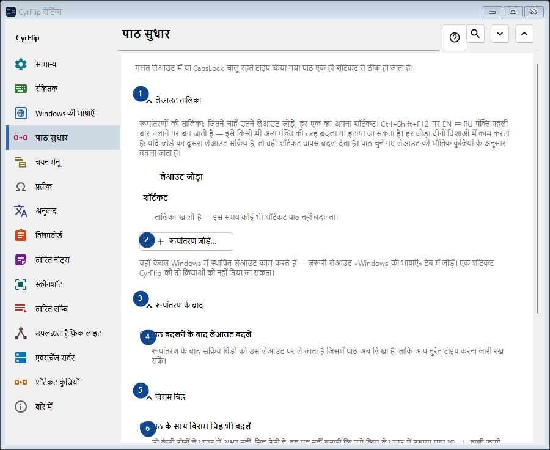
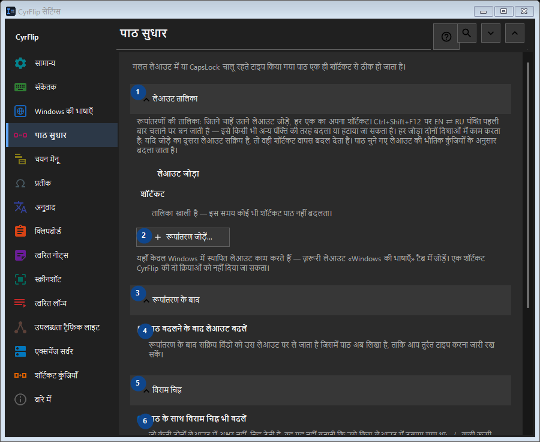

पाठ सुधार
इसका उपयोग
गलत लेआउट में या CapsLock चालू रहते टाइप किया गया पाठ एक ही शॉर्टकट से ठीक हो जाता है।


उपयोग का क्रम
सेटिंग तुरंत लागू होती हैं। कोई अनिवार्य क्रम नहीं है; नीचे दिए समूहों का उपयोग करें।
तत्व
1. लेआउट तालिका
बताई गई कार्रवाई के लिए इस आदेश का उपयोग करें। स्वीकार करने से पहले पुष्टि पढ़ें।
आपके शॉर्टकट2. रूपांतरण जोड़ें...
बताई गई कार्रवाई के लिए इस आदेश का उपयोग करें। स्वीकार करने से पहले पुष्टि पढ़ें।
आपके शॉर्टकट3. रूपांतरण के बाद
बताई गई कार्रवाई के लिए इस आदेश का उपयोग करें। स्वीकार करने से पहले पुष्टि पढ़ें।
आपके शॉर्टकट4. पाठ बदलने के बाद लेआउट बदलें
रूपांतरण के बाद सक्रिय विंडो को उस लेआउट पर ले जाता है जिसमें पाठ अब लिखा है, ताकि आप तुरंत टाइप करना जारी रख सकें।
आपके शॉर्टकट5. विराम चिह्न
बताई गई कार्रवाई के लिए इस आदेश का उपयोग करें। स्वीकार करने से पहले पुष्टि पढ़ें।
आपके शॉर्टकट6. पाठ के साथ विराम चिह्न भी बदलें
जो कुंजी दोनों लेआउट में अक्षर नहीं, चिह्न देती है, वह यह नहीं बताती कि उसे किस लेआउट में दबाया गया था: «/» वाली रूसी कुंजी पर पूर्णविराम होता है, और अंक-पटल का «/» हर जगह एक जैसा है और कॉपी किए गए पाठ में सामान्य से अलग नहीं पहचाना जा सकता। जब तक यह चुना हुआ है, ऐसे चिह्न पाठ के साथ बदले जाते हैं - CyrFlip हमेशा से ऐसा ही करता आया है। यदि आप उन्हें जानबूझकर अधिक लिखते हैं तो इसे हटा दें: तब «/ghbdtn» पूर्णविराम से शुरू होने के बजाय अपना स्लैश बनाए रखेगा। जिन चिह्नों की कुंजी पर दूसरे लेआउट में अक्षर होता है (अल्पविराम, कोष्ठक), वे हर हाल में बदले जाते हैं।
आपके शॉर्टकट7. अक्षर केस
बताई गई कार्रवाई के लिए इस आदेश का उपयोग करें। स्वीकार करने से पहले पुष्टि पढ़ें।
आपके शॉर्टकट8. CapsLock ठीक करें
चयनित पाठ के बड़े और छोटे अक्षर आपस में बदल देता है; गलती से CapsLock चालू रह जाने पर उपयोगी।
आपके शॉर्टकट9. बदलें - CapsLock ठीक करें
बताई गई कार्रवाई के लिए इस आदेश का उपयोग करें। स्वीकार करने से पहले पुष्टि पढ़ें।
आपके शॉर्टकट10. केस सुधार के बाद CapsLock समन्वयित करें
केस सुधार के बाद CapsLock की भौतिक स्थिति बदल देता है, ताकि आगे के कीस्ट्रोक सुधरे हुए पाठ से मेल खाएँ।
आपके शॉर्टकट